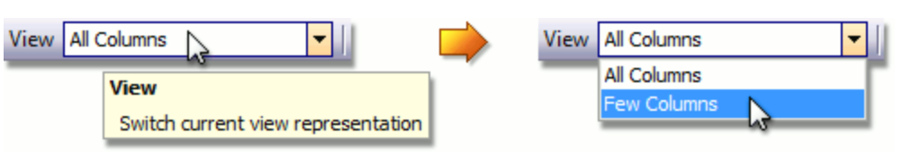
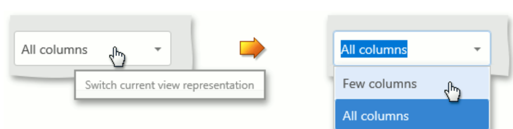
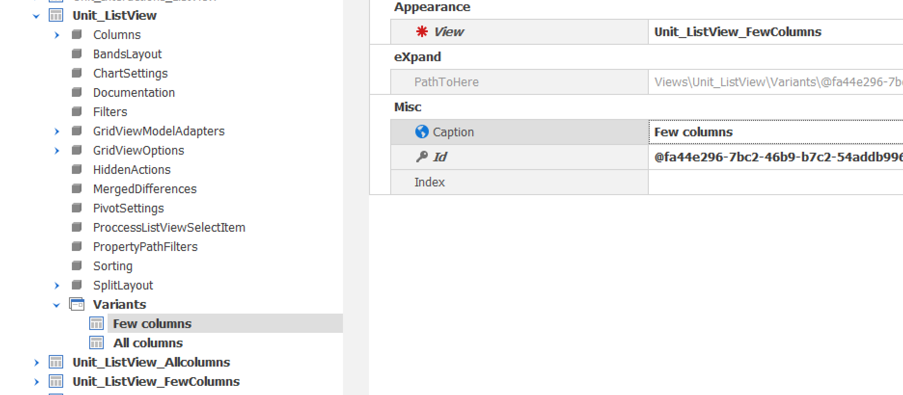

View variants
You may wish to provide several customized variants of the same View, and allow an user to choose the desired View Variant at runtime. For instance, users may need to use different List View column sets and Detail View layouts in different scenarios.
EarthCape Windows Client: 
EarthCape Web Client: 
They may also need to use two List View modes: a single List View and a List View with a Detail View (see MasterDetailMode). This topic will show you how to use this module to provide multiple versions of the same View.
To add View Variants, do the following:
Define a new View for the required object type in the Application Model. To do this, add a new ListView or DetailView node to the Views node, and specify its ModelClass and Id properties. In the node's context menu, choose Generate content and specify the required settings (column set, layout, etc.).
Repeat this step to add as many Views as required.
Define a new View that will represent the varied List View or Detail View for the required object type. Give it a meaningful ID to distinguish it from other Views of this object type. This View node will store view variants. Right-click it and select Add... | Variants. The Variants child node will be added.
Invoke the context menu for the Variants node and select the Add/Variant menu item.
Specify the newly added node's Caption and Id properties. Specify the Id property by selecting View from the drop-down list. Note that the View will be present in this drop-down list if its ModelClass property has the same value as the current View. Additionally, you can specify the Index property to set a custom sort order for variants. Repeat this step to add all newly created Views and the default View.
Specify the Current property of the Variants node by selecting a variant ID from the drop-down list. This variant will be used by default. Set the required object's DefaultListView property to the Id of the varied View. Alternatively, you can change the View property of a specific NavigationItem node or DetailView of a specific ListView node, to specify the varied view instead of the default view.
The following image illustrates how the varied View and its View Variants are organized in the Application Model.

A variant can be chosen from the drop-down list. Variants are sorted according to their Index property values. The previously selected variant ID is stored with user customizations.